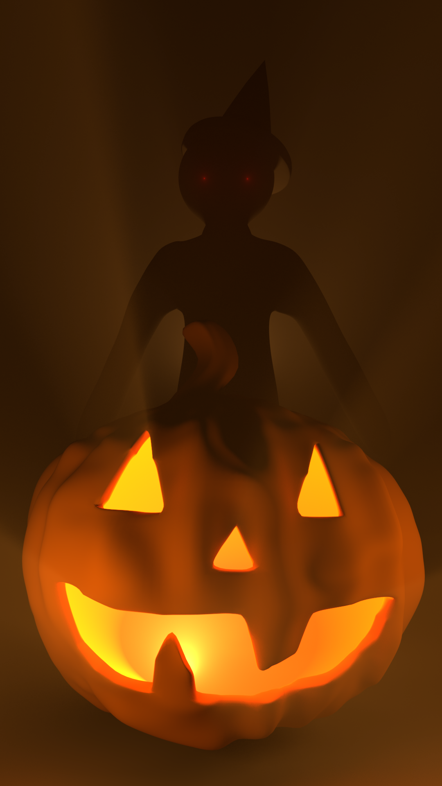

Lighting
Spooky Hallway
My final project for Lighting, Rendering, and Cinematography.
If you'd prefer to watch Spooky Hallway without YouTube compression, you can download the raw mp4.
Still Cinematography
Scenes that evoke a specific mood or tell a story. Some models are 3D-scanned statues from TurboSquid artist oliverlaric.
Claustrophobia
Blood Moon

Ruined Picnic

The Things People Have On Their Desks Says Something About Who They Are

Absurd Interrogation

Foggy Beach
Valuable Item

Hidden Monster
Spooky Night
Inspiring Leader